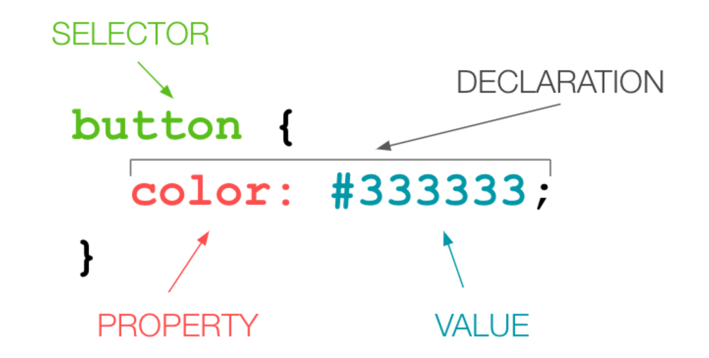

C.S.S AKA cascading style sheets is commonly used by developers to decorate, add fonts animate and organize elements within the document via CSS selectors. CSS derscribes how html elements are to be displayed on screen and it also saves alot work it can conrtol the layout of multiple webpages at once. The syntax includes selectors. properties, values, decalrations, reulesets, at rules and statements. A selector is a code snippet used to identify the web-page element or statement that are to be influenced by the Style. Now lets analyze the anatomy of a CSS ruleset:

Lets begin with what is this? this is called a CSS ruleset and the tag selector; This is primal, button next to the curly braces is the lead for the css rule to follow, witch means that once the code runs it will influence all the button tags available in the document. Furtermore, the curly braces act as a capsule for the tag selector. so it can store all related data. Next, we have the property and its value; the proprty here is color and its value is hex value # 333333 and the colon separates the two entities. No doubt, CSS is a very tricky leanguage, we can also dive deeper and talk about the CSS selctors themselbs. The slector we used is called a tag selector and it is used for targheting all tags within the documents; such as H1, I, P, and A of course.